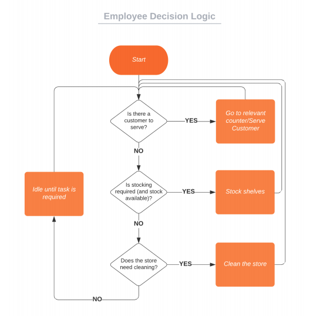
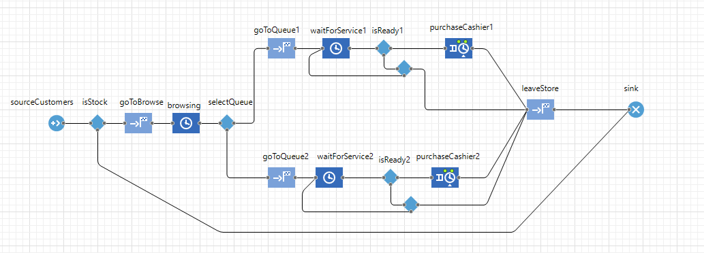

Workforce Optimisation
Another project from my Scientific Computation Masters, from the module "Simulation and Optimisation for Decision Support". This module was focused on the application of Operations Research principles to a commercial setting. For the main coursework we were tasked with an optimisation problem built to mirror the sorts of problems that OR solves in the real world.
I was given the setting of a chain of charity stores, who were looking to optimise the use of their workforce, so that they were optimally staffed in any given sitation. The chain have a centralised workforce pool, so they can distribute employees across different stores as they see fit.
I designed a model that would, as faithfully as possible, represent the real world system, taking into account several variables that would be important for the day-to-day operation of the stores, without overcomplications. I then implemented this model in Anylogic PLE as a simulation, and then performed an optimisation experiment to find the best allocation of staff resources to maximise utilisation, subject to restraints on customer wait times, stock percentage and store cleanliness.
The simulation was reduced to the point where it was directly solvable, and a single, best distribution across 2 larger stores and 3 smaller stores was found that meant stores would be staffed correctly for an average day of operation.
Planning & Design
When designing a model to be simulated, it is important to do so in a way that does not have any specific implementation in mind. As a result, the model itself is nothing more than a list of all of the considerations of the system, in terms of parameters to be varied, variables to be tracked, and instructions for how different parts of the model interact with each other. For example, my model takes into account 3 variables for the stores themselves:
- Store Cleanliness - Expressed as a percentage score
- Stock Percentage - The percentage of shelves stocked with goods customers can purchase.
- Waiting times - The amount of time a customer waits before being served, after they've gone to a till
These three parameters are combined into a single statistic, the customer satisfaction score, where each variable has a weight of a third. It is calculated as
Customer Satisfaction Score \(= 3.34 - \frac{T}{60 \text{x} 3} + \frac{3.33 \text{x} S}{100} + \frac{3.33 \text{x} C}{100}\)
where \(T\) is the time spent waiting (in seconds), \(S\) is the stock percentage, and \(C\) is the cleanliness percentage.

Behaviours of the agents within the model are captured in flow charts. For example, Employees have a hierarchy of tasks, and will do the most important avaiable task at any given time.
The idling time in the flow chart (when no tasks are available) is essentially what is to be minimised in the experiment, and we calculate the total 'Employee Utilisation' as
Total Employee Utilisation \(= \frac{\sum_{j}\sum_{i}x_{ij}}{nt}\)
where \(x_{ij}\) is 0 if employee \(i\) is idle at timestep \(j\), and 1 otherwise. \(t\) is the total number of timesteps up to that point, and \(n\) is the total number of employees that are working.
As this is a model scenario, it is important to make sensible abstractions from the real world setting to avoid unnecessary calculations, and assumptions based on a lack of extensive data about the real world scenario. For example, some of the simplifications and assumptions in my model were:
- Customers are identical in behaviour - different stereotypes/personalities are not accounted for
- Employees all work at the same rate, and do not become fatigued or ill
- Each customer reduces the stock percentage by the same amount when they buy something
- Customers arrive according to a predictable distribution (e.g slow start to the day, and peak times at 12:00PM)
Implementation
Since the end goal was to find an optimal solution for the model, which could then hopefully be translated into a real-life solution, it needed to be implemented in some software that can run it many times over and observe the effects on the variables.
 The software I constructed the implementation in was Anylogic PLE, a framework designed to handle experiments like this, and to deliver real world OR solutions. The core units in Anylogic are 'Agents', who interact with each other in programmable ways. More complicated behaviours can be extended to agents and objects within them using java. For example, I wrote code to update the employee utilisation every timestep, to activate once every second.
Pictured is the Anylogic implementation of the process chain that ‘customer’ agents move through on two queues within one of the smaller stores At most stages, parameters of the queue (like waiting times) decide how the customers move forward, like in a flow chart.
The model is sufficiently simple to be explicitly solvable, although this does take a long time. An experiment (built in to Anylogic) runs the model for different numbers at different stores, and finds the solution that maximises employee utilisation, subject to restraints on the customer satisfaction scores. The experiment I ran for the coursework successfully finds the best feasible solution within about an hour.
Interact
The simulation created on Anylogic can be played below on desktop devices. You can drag the screen around and see the aggregate statistics from the main menu, and double click each of the stores to see them operating on a moment-by-moment basis.